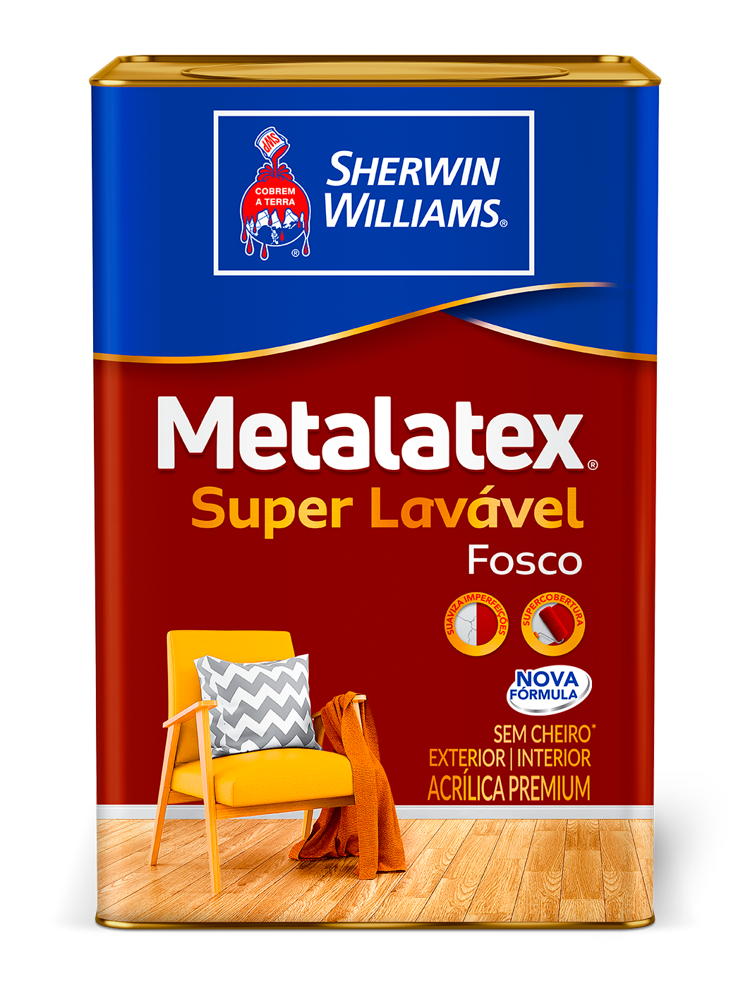
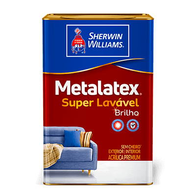
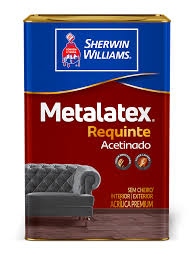
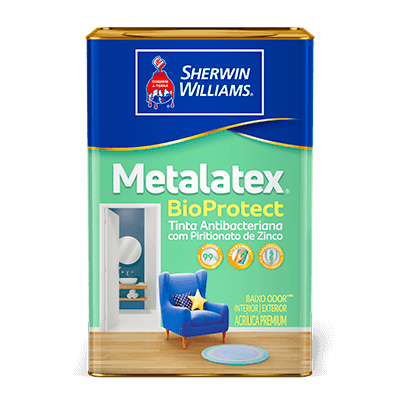
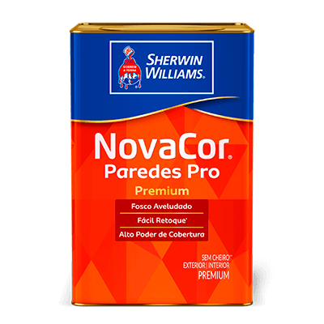
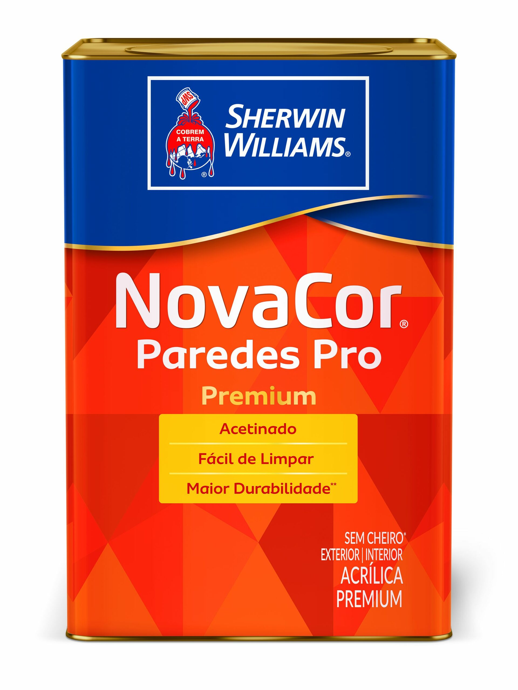

Metalatex Super Lavável Fosco
📐 Tamanhos disponíveis: 900ml, 3,6L e 18LTinta acrílica premium, indicada para superfícies externas e internas. Que precisam de limpeza frequente. Possui fórmula exclusiva que suaviza imperfeições e ainda possibilita a remoção de manchas difíceis, causadas por alimentos, bebidas, manchas de dedos, entre outros, mantendo a proteção da superfície mesmo após a limpeza. Possui excelente cobertura, durabilidade, rápida secagem e ótimo rendimento. Desenvolvida com matérias primas de alta tecnologia, sua formulação permite que a pintura seja feita em áreas internas ocupadas, garantindo que o ambiente permaneça sem cheiro* em até 1 hora após a aplicação.

Metalatex Super Lavável Brilho
📐 Tamanhos disponíveis: 900ml, 3,6L e 18LTinta acrílica premium indicada para superfícies externas e internas que precisam de limpeza frequente. Possui fórmula exclusiva que dá mais luz ao ambiente e ainda possibilita a remoção de manchas difíceis, causadas por alimentos, bebidas, manchas de dedos, entre outros, mantendo a proteção da superfície mesmo após a limpeza. Possui excelente cobertura, durabilidade, rápida secagem e ótimo rendimento. Desenvolvida com matérias primas de alta tecnologia, sua formulação permite que a pintura seja feita em áreas internas ocupadas, garantindo que o ambiente permaneça sem cheiro* em até 1 hora após a aplicação.

Metalatex Requinte Acetinado
📐 Tamanhos disponíveis: 900ml, 3,6L e 18LMETALATEX REQUINTE ACETINADO é uma tinta acrílica Premium de acabamento ACETINADO, indicada para superfícies externas e internas que precisam de limpeza frequente. Possui fórmula exclusiva que dá um toque sofisticado ao ambiente e ainda possibilita a remoção de manchas difíceis, causadas por alimentos, bebidas, manchas de dedos, entre outros, mantendo a proteção da superfície mesmo após a limpeza. METALATEX REQUINTE possui excelente cobertura, durabilidade, rápida secagem e ótimo rendimento. Desenvolvida com matérias primas de alta tecnologia, sua formulação permite que a pintura seja feita em áreas internas ocupadas, garantindo que o ambiente permaneça sem cheiro* em até 1 hora após a aplicação. METALATEX REQUINTE reforça o compromisso e respeito da Sherwin-Williams com o meio ambiente.

Metalatex Elastic Emborrachada
📐 Tamanhos disponíveis: 3,6L e 18LMETALATEX ELASTIC é uma tinta acrílica indicada para prevenir e corrigir fissuras. Sua propriedade emborrachada proporciona alta flexibilidade acompanhando o movimento da superfície. Com excelente resistência à água, proporciona uma proteção eficaz contra umidade, mofos, algas e danos causados pelo tempo. Sua fórmula avançada contribui para evitar a absorção de sujeira ajudando a preservar a vivacidade das cores, prolongando sua durabilidade e revitalizando o ambiente. METALATEX ELASTIC reforça o compromisso e respeito da Sherwin-Williams com o meio ambiente.

Metalatex BioProtect Antibacteriana
📐 Tamanhos disponíveis: 900ml e 3,6LTinta acrílica, indicada para ambientes que precisam de cuidado total ou com alta exposição à umidade. Sua fórmula possui poderoso fungicida, elimina 99%* dos microrganismos testados e protege as paredes contra bactérias, mofo e fungos por 2 anos*. Metalatex Bioprotect tem alta lavabilidade** e é recomendada para banheiros, quartos, cozinhas, adegas, saunas, lavanderias, garagens, entre outros ambientes. Desenvolvida com matérias-primas de alta tecnologia, sua formulation permite que a pintura seja feita em áreas internas ocupadas, garantindo que o ambiente permaneça com baixo odor*** após 4 hours da aplicação da segunda demão.

NovaCor Paredes Pro Premium Fosco
📐 Tamanhos disponíveis: 900ml, 3,6L e 18LTinta acrílica premium de acabamento fosco aveludado, indicada para superfícies externas e internas com alto poder de cobertura. Possui fórmula exclusiva que suaviza imperfeições garantindo facilidade no retoque*. NovaCor Paredes PRO possui excelente cobertura, durabilidade, rápida secagem e ótimo rendimento.

NovaCor Paredes Pro Premium Acetinado
📐 Tamanhos disponíveis: 900ml, 3,6L e 18LÉ uma tinta acrílica Premium with acabamento ACETINADO, indicada para superfícies externas e internas que necessitam de limpeza frequente. Sua fórmula exclusiva oferece um toque sofisticado e suave ao ambiente. NOVACOR PAREDES PRO oferece excelente durabilidade e cobertura proporcionando praticidade no seu dia a dia. Desenvolvida com matérias primas de alta tecnologia, sua formulação permite que a pintura seja feita em áreas internas ocupadas, garantindo que o ambiente permaneça sem cheiro* em até 1 hora após a aplicação. NOVACOR PAREDES PRO ACETINADO reforça o compromisso e respeito da Sherwin-Williams com o meio ambiente.